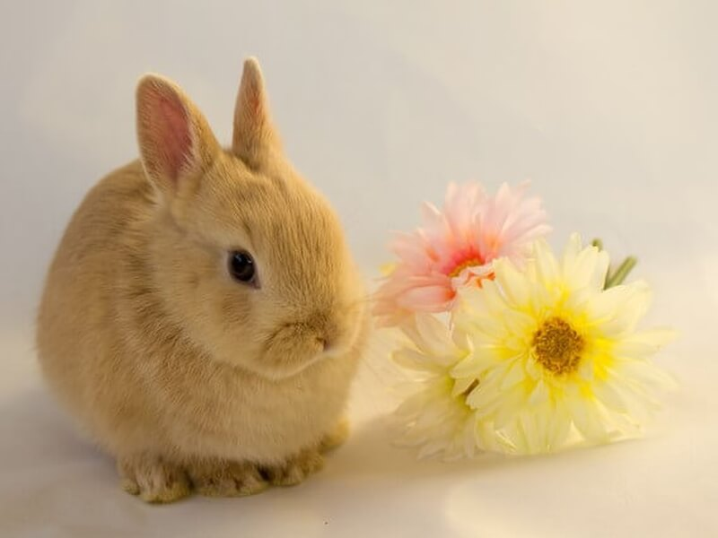

・最もポピュラーな品種。体は小型。性格もおとなしく、飼いやすい。
・丸い顔に小さな耳と短い首が特徴。
・ピーターラビットのモデルになったウサギともいわれている。 そのことから、ペットショップによってはピーターラビットやミニウサギと呼んでいるところもある模様。
・ネザーランド・ドワーフの頭と目は、体のプロポーションに反し大きく、耳は小さく立ち耳、頭頂部に位置する。そして、顔は丸く短い。コンパクトで丸い身体をしている。
ホームページはこちら